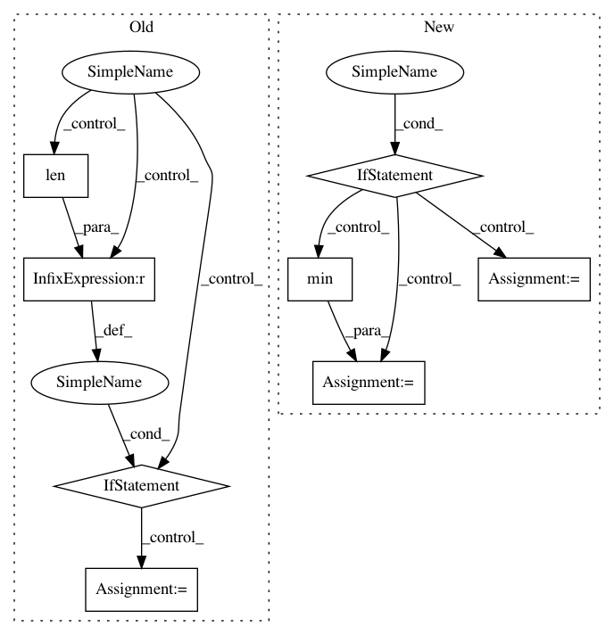

35ed48386992d824973d8ed39cfa299614b7cd34,kur/loggers/binary_logger.py,BinaryLogger,load_statistic,#BinaryLogger#Any#,224
Before Change
values = values[-len(batches):]
else:
values = values[0:0]
elif len(batches) > len(values):
if len(values):
batches = batches[-len(values):]
else:
batches = batches[0:0]
return (batches, values)
After Change
))
lens = [len(x) for x in (values, batches, timestamps) if x is not None]
if not lens:
return (None, None, None)
keep = min(lens)
def modify(x):
Truncates the data series appropriately.
if x is None:
return None
elif keep:
return x[-keep:]
else:
return x[0:0]
values, batches, timestamps = \
tuple(modify(x) for x in (values, batches, timestamps))
return (batches, timestamps, values)
////// EOF.EOF.EOF.EOF.EOF.EOF.EOF.EOF.EOF.EOF.EOF.EOF.EOF.EOF.EOF.EOF.EOF.EOF.EOF
In pattern: SUPERPATTERN
Frequency: 3
Non-data size: 8
Instances
Project Name: deepgram/kur
Commit Name: 35ed48386992d824973d8ed39cfa299614b7cd34
Time: 2017-02-28
Author: ajsyp@syptech.net
File Name: kur/loggers/binary_logger.py
Class Name: BinaryLogger
Method Name: load_statistic
Project Name: chainer/chainercv
Commit Name: 90b78b1379b3423aa3b4b5d0de7313f88bda23ab
Time: 2019-02-17
Author: yuyuniitani@gmail.com
File Name: chainercv/utils/mask/mask_to_bbox.py
Class Name:
Method Name: mask_to_bbox
Project Name: ilastik/ilastik
Commit Name: d835c2656618fe0d227c7eb15eecb4847e8b6475
Time: 2012-07-02
Author: bergs@janelia.hhmi.org
File Name: lazyflow/operators/obsolete/classifierOperators.py
Class Name: OpPredictRandomForest
Method Name: execute